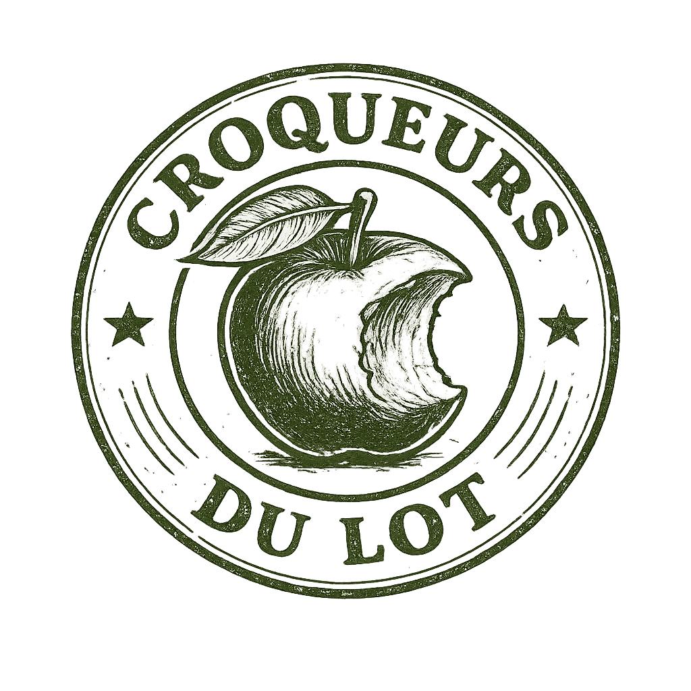
Mission
Les Croqueurs de Pommes du Lot forment l’un des maillons du réseau national du même nom, fondé par Jean-Louis Choisel en 1978 et regroupant près de 8500 adhérents. Notre association lotoise est née en 2012 et compte à ce jour près de 130 adhérents.
En collaboration avec l’Association Nationale des Croqueurs de Pommes
Nous oeuvrons à l’identification, à la recherche et à la sauvegarde des anciennes variétés méritantes de pommes et autres fruits, en garantissant leur transmission auprès de nos adhérents (fourniture de greffons et porte-greffes, formation au greffage, publications).
A l’échelle du département
Nous assurons un accompagnement en arboriculture (via divers ateliers et animations : techniques de taille et conduite des arbres ; conception et soins du verger), la plantation et le suivi de vergers communaux, et l’organisation d’événements associés (fête de la pomme, expositions...).
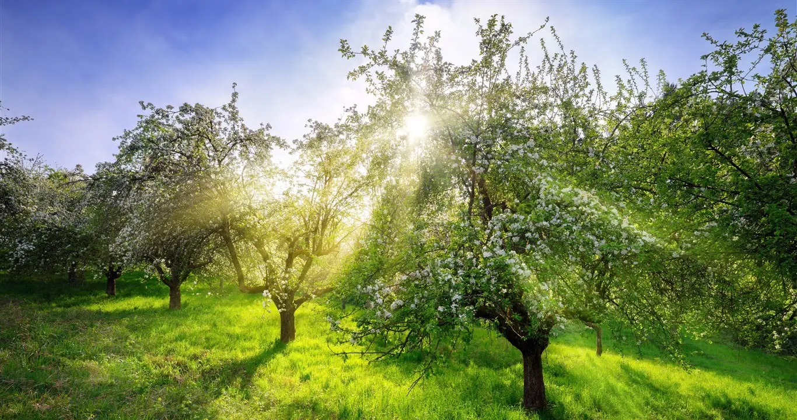
Adhésion
Bénéfices
- Accès prioritaire à diverses manifestations, formations (greffage, taille, conduite), visites de vergers, conférences, etc.
- Conseils personnalisés de nos référents.
- Accès à notre bourse aux greffons (variétés locales et/ou anciennes).
- Achat à tarif préférentiel de porte-greffes, arbres greffés, petit matériel utile au verger (élastiques à greffer, étiquettes…), ouvrages spécialisés, etc.
- Réception trimestrielle du bulletin national des Croqueurs (actualités, annonces, leçons d’arboriculture...) + un numéro de fin d'année.
- Participation au repas annuel de l'Assemblée Générale.
Adhérer
L’adhésion à l’association, valable pour l’année civile en cours, se fait via une cotisation personnelle et annuelle de 30€. Elle peut être réglée de deux manières :
- en ligne via la plateforme sécurisée HelloAsso : remplissez notre formulaire à cette adresse.
- par courrier : téléchargez et imprimez le bulletin suivant, que vous enverrez à l’adresse indiquée accompagné du règlement (espèces ou chèque).
Recrutement
Plus encore qu’une adhésion financière, notre association requiert une adhésion en actes afin de perpétuer sa mission. Ainsi, nous accueillons à bras ouverts toute personne désireuse de s’employer dans une ou plusieurs activités : contactez-nous pour trouver votre place chez les Croqueurs !
Répartition des ressources
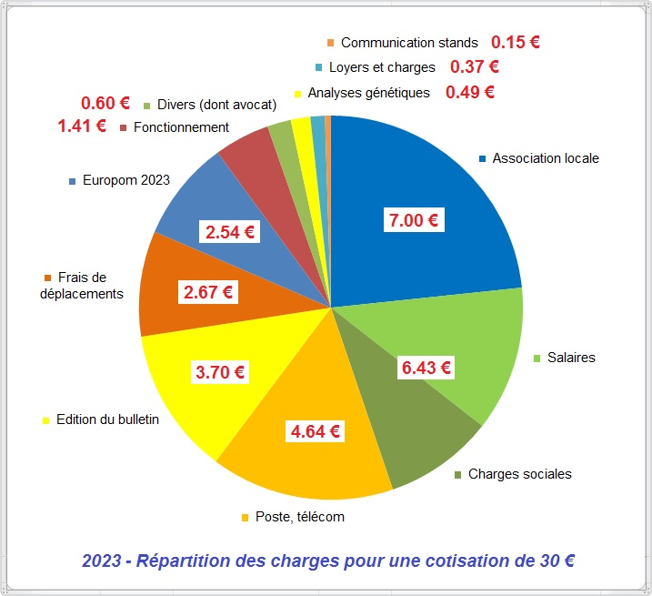
Référents
Afin de vous épauler localement, nous nous efforçons de quadriller le département via un réseau de personnes référentes, que les adhérents peuvent contacter directement pour prendre conseil, voire pour diagnostiquer leur (futur) verger. Cela en fonction des disponibilités de chacun, entendu que nous sommes tous bénévoles.
La carte ci-dessous indique la présence géographique des référents, dont il vous faut demander expressément le contact si vous souhaitez les joindre.
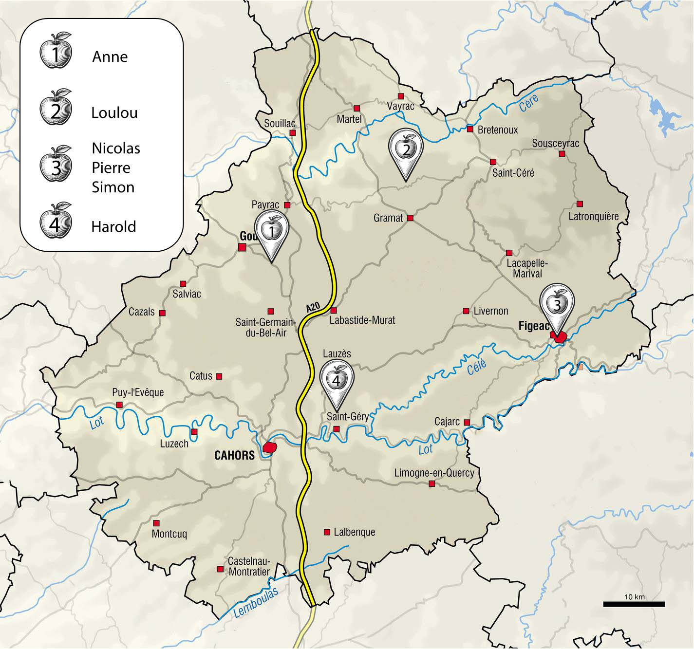
Ressources
Vidéos
De nombreuses vidéos de qualité ayant pour thème l'arboriculture sont disponibles sur internet : conférences, formations, visites de verger... Nous suivons en particulier les interventions d’Evelyne Leterme, Jean-Marie Lespinasse, Marceau Bourdarias, Julien Coirier, Catherine Lenne, Marc-André Selosse, Ernst Zürcher, Francis Hallé, etc. (liste non-exhaustive).
Pépiniéristes du Lot
Essentiellement axés sur les arbres fruitiers et commercialisant une gamme intéressante de variétés rustiques et/ou locales.
Les Bois Nouzilles (Yohan Hénault)
- Arbres et arbustes fruitiers et autres plantes comestibles ; plantes permacoles ; ferme en permaculture-biodynamie (certifiée AB)
- 46100 Saint-Perdoux
- 06 95 18 19 32
- les.bois.nouzilles@gmail.com
- http://www.pepiniere-les-bois-nouzilles.fr
Pépinière de Pauly (Patrick Crelot)
- Fruitiers du scions au petits fruits ; certifié Bio, produit sur la pépinière ; variétés rustiques, d'ici ou d'ailleurs, adaptées au-sud ouest.
- 46300 Le Vigan
- 06 20 66 57 51
- pepinierefruitieredepauly@gmail.com
François Chaumeil
- Plants à vocation truffière (contrôlés par le CTIFL) ; arbres mycorhisés avec de la Tuber Melanosporum. Essences de chênes verts, pubescents, kermès, charmes, noisetiers, cèdres, pins d'Alep, etc.
- 46600 Sarrazac
- 06 81 06 86 79
- contact@plant-truffier-chaumeil.fr
- https://www.plant-truffier-chaumeil.fr
Des racines et des fruits (Emmanuelle Piron)
- Arbres fruitiers greffés, petits fruits & essences champêtres ; conseil en plantation de haies fruitières diversifiées ; agriculture bio.
- 46330 Tour de Faure
- 06 77 52 01 15
- desracinesetdesfruits@riseup.net
- https://www.facebook.com/desracinesetdesfruits46
Sous le sureau
- Pépinière paysanne ; production d'aromatiques, grimpantes, petits fruits, fruitiers et arbres
- 46120 Terrou
- 06 88 72 22 24
- alombredessureaux@orange.fr
- https://www.facebook.com/people/A-lOmbre-des-Sureaux/61551166887813
Les graines de Clayrac (Magalie Lejaille)
- Arboriculture fruitière au sein d'une ferme en polyculture
- 46600 Bio
- 06 68 71 52 50
- https://lesgrainesdeclayrac.com
- https://l-q-p.com
Linard
- Pépinière spécialisée dans le noyer et le châtaignier.
- 46200 Souillac
- 05 65 37 83 17
- https://l-q-p.com
Jarrige
- Sélection diversifiée d’arbres fruitiers et de petits fruits, comprenant plus de 200 variétés locales, y compris des noyers (plants certifiés INRA-CTIFL) et des châtaigniers.
- 46110 Le Vignon-en-Quercy
- 05 65 32 11 40
- http://www.pepinieresjarrige.fr
Les Jardins de Lherm (Jean-Baptiste)
- Verger conservatoire botanique, arboriculture, plantes aromatiques et médicinales, fleurs et vivaces, pépinière et bouturothèque.
- 46190 Sousceyrac en Quercy
- 06 64 64 99 98
- https://les-jardins-de-lherm.fr
Figues du Monde (Thierry Demarquest)
- Pépinière spécialisée dans les figuiers (environ 300 variétés) ; variétés anciennes d'arbres fruitiers (pommiers, poiriers, pruniers) ; agriculture biologique (Nature & Progrès et AB).
- 46140 Douelle
- 06 15 14 75 23
- https://figuesdumonde.wordpress.com
Mouraud
- Pépinière spécialisée dans le noisetier, le noyer et le châtaignier.
- 46200 Pinsac
- 06 08 60 00 47
- contact@mouraud.fr
- https://www.mouraud.fr
Mentions légales
Formulaire de contact
Identification
- Nom complet : association locale des Croqueurs de Pommes du Haut-Quercy
- Forme juridique : association loi 1901
- Adresse du siège social : mairie de Miers (46500)
- Contact téléphonique : 06 24 50 39 12
- Responsable du site : Nicolas Poignant
- Hébergeur : nom / adresse
Composition du bureau

Robert Bouyssou
Président d'honneur
Marie-Agnès Vaurs
Présidente

Jean-Claude Béziat
Vice-président
Pierre Rouillon
Vice-président
Bernard Veyssière
Vice-président
Marie-Ange Vaurs
Trésorière
Jean Pierre Legrand
Secrétaire
Louis Legrand
Délégué au national
Politique de confidentialité
Le présent site a pour vocation de fournir des informations sur les activités, missions et actualités de l’association.
L’association attache une importance particulière au respect de la vie privée et à la protection des données personnelles, conformément au Règlement Général sur la Protection des Données (RGPD) et à la législation française en vigueur.
Le formulaire de contact ci-dessus permet aux visiteurs de transmettre un message à l’association. Les données saisies sont exclusivement utilisées pour répondre à la demande formulée et ne sont ni conservées au-delà du traitement, ni transmises à des tiers.
En cas d’adhésion par courrier, les données personnelles transmises (nom, prénom, coordonnées) sont utilisées uniquement pour la gestion administrative et la communication liée à la vie de l’association. Ces données sont accessibles uniquement aux membres habilités de l’association et ne sont transmises à aucun tiers. Elles sont conservées pendant la durée de l’adhésion,puis archivées conformément aux obligations légales et associatives, ou supprimées lorsqu’elles ne sont plus nécessaires.
En cas d’adhésion en ligne, les modalités de collecte, de traitement et de conservation des données relèvent de la politique de confidentialité de la plateforme sécurisée HelloAsso, accessible sur leur site.
Conformément au RGPD, toute personne dispose des droits d’accès, de rectification, d'effacement, d'opposition et de limitation du traitement de ses données, exerçables en contactant l’association.
Ce site respecte les principes de minimisation des données, de transparence et de protection de la vie privée.
Fabrication de jus de pommes
L’association dispose de 3 ateliers de pressage dans le département (à Miers, Faycelles et Douelle), pouvant être mis à disposition des adhérents moyennant une contribution aux frais (gaz, entretien et amortissement du matériel, présence d’un accompagnant). Bouteilles en verre et capsules sont également vendues.
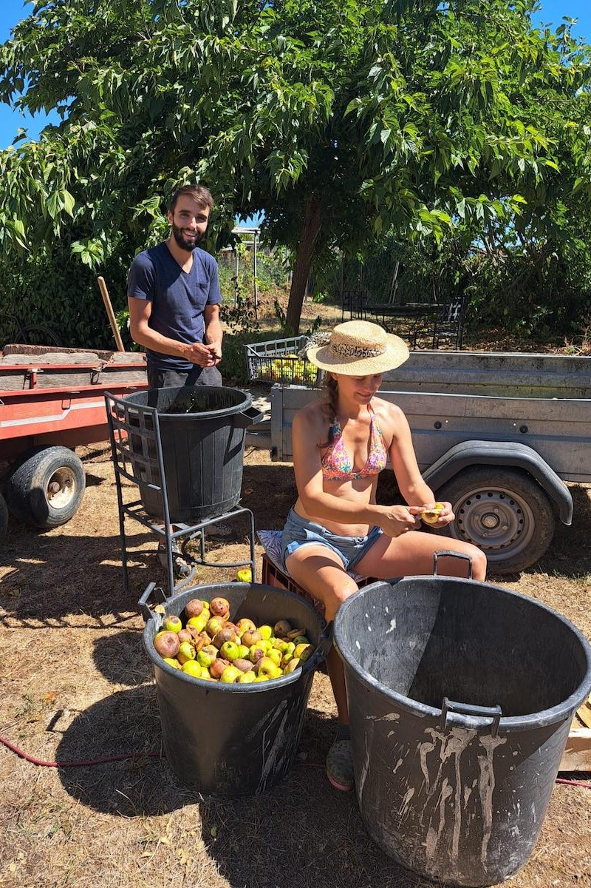
1| tri et nettoyage
Les pommes sont sélectionnées pour éliminer les fruits abîmés ou pourris, puis lavées si elles sont sales (terre, feuilles). Dans l’idéal, cette étape doit être faite avant votre venue à l’atelier.
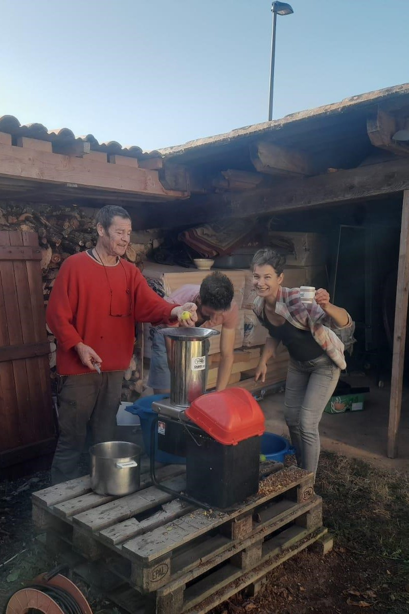
2| broyage
Les pommes sont broyées et réduites en une pulpe homogène pour libérer le jus contenu dans les cellules du fruit. C’est un facteur clé pour obtenir un bon rendement en jus. A cet effet, nous disposons de broyeur électrique performant.
3| pressage
La pulpe est placée dans un pressoir à cliquet. Selon la taille de celui-ci, il est possible de presser 100 à 180 kgs de pulpe par passe. Le jus est recueilli dans des seaux en inox et le marc (peau, pépins, fibres) peut être récupéré pour le compost ou autre (prévoir des contenants).
4| décantation (optionnel)
Afin d’obtenir un jus clair et homogène, il peut être laissé au repos afin que les particules en suspension se déposent. Cette étape n’est pas obligatoire et sert essentiellement le côté visuel. Un jus trouble est d’ailleurs intéressant si l’on recherche une fermentation.
5| pasteurisation douce
Le jus est chauffé à une température contrôlée (70 à 75 °C) pendant quelques temps afin de détruire les bactéries pathogènes et levures, tout en altérant le moins possible sa qualité (arômes, vitamines). Ce traitement prolonge la durée de conservation et évite la fermentation non désirée.
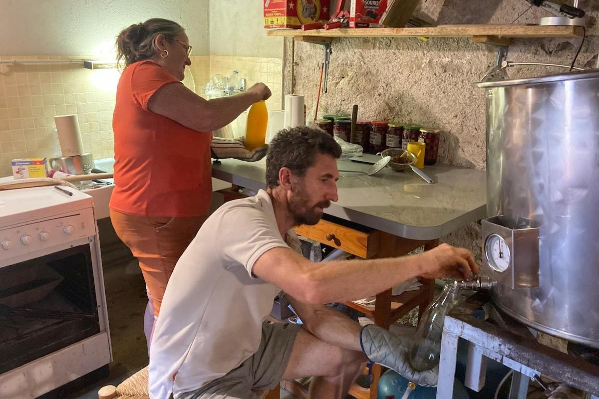
6| mise en bouteille
Le jus pasteurisé est conditionné dans des bouteilles propres (stérilisées). Il arrive qu’une fine tâche de moisissure immobile apparaisse en surface : il s’agit un dépôt de spores inertes ne présentant aucun risque sanitaire, et n’altèrant aucunement le goût tant que la bouteille reste hermétiquement fermée.
Librairie
De nombreuses publications ont été éditées par l’association nationale des Croqueurs de Pommes et les sections départementales, que vous pouvez vous procurer auprès des Croqueurs du Lot durant l’année (lors d’événements, expositions, assemblée générale, etc). Cliquez sur les couvertures pour davantage d'informations.
En complément, une sélection d’ouvrages de qualité touchant à tous les aspects de l'arboriculture fruitière, que nous recommandons vivement pour parfaire votre culture !
Actualités
Evénements passés et à venir.
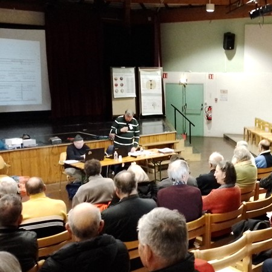
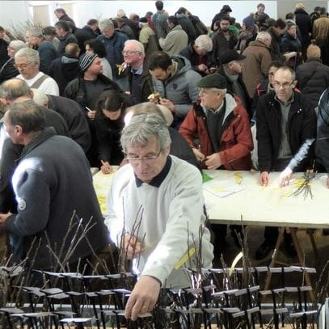
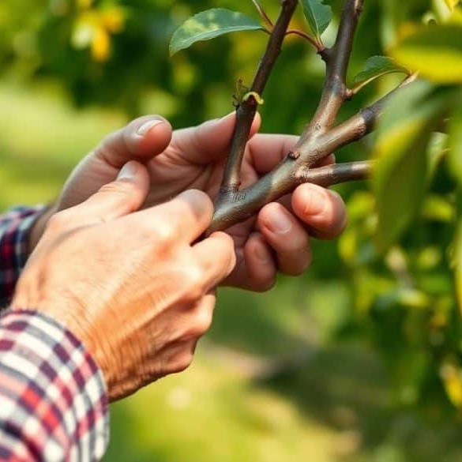
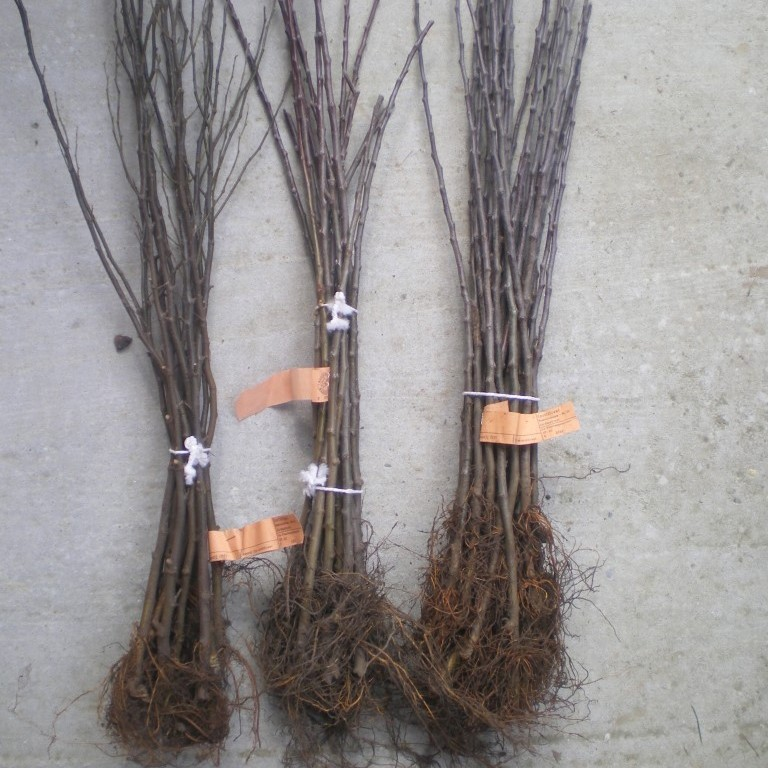
Variétés du Lot et départements limitrophes
Du point de vue pomologique, nous n’avons pas la richesse et la diversité de nos voisins immédiats (Corrèze ou Cantal), mais pouvons tout de même nous enorgeuillir de quelques variétes typiques de pommes, prunes, pêches ou noix. Vous trouverez donc ci-dessous des variétés issues du Lot « élargi ». La plupart des informations variétales sont extraites de l’excellent ouvrage « Les fruits retrouvés, patrimoine de demain » (Éditions du Rouergue ; 2020).
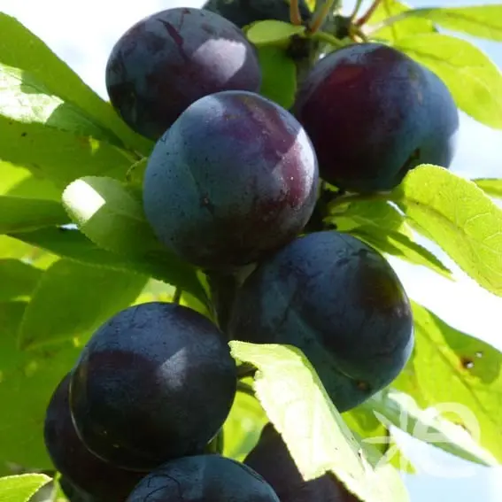
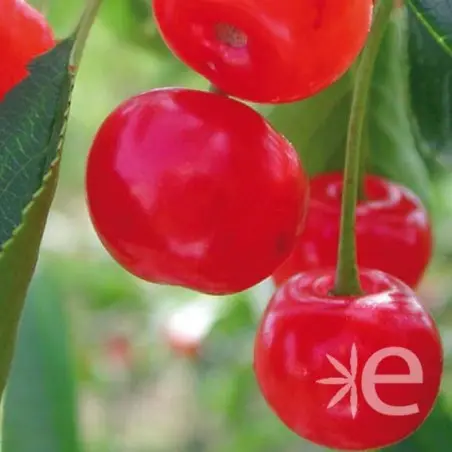
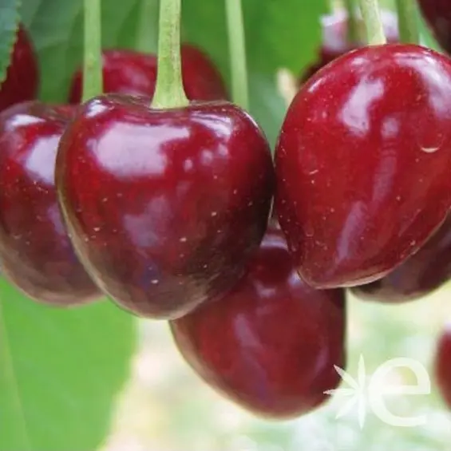
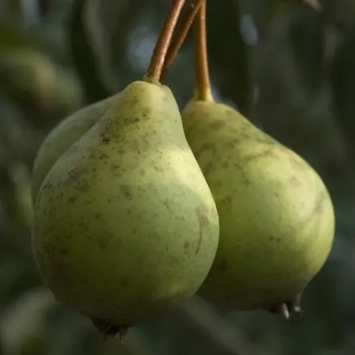
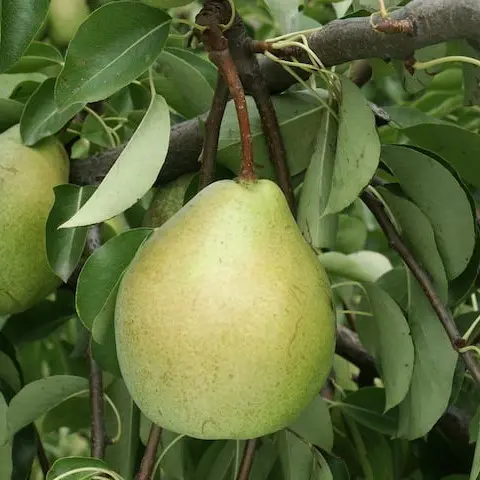
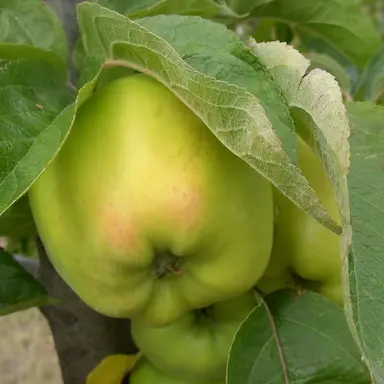
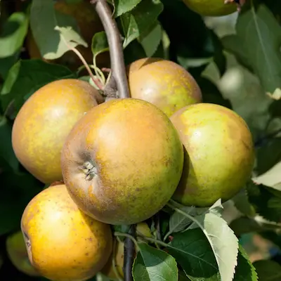
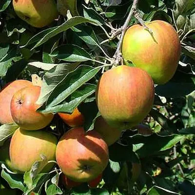